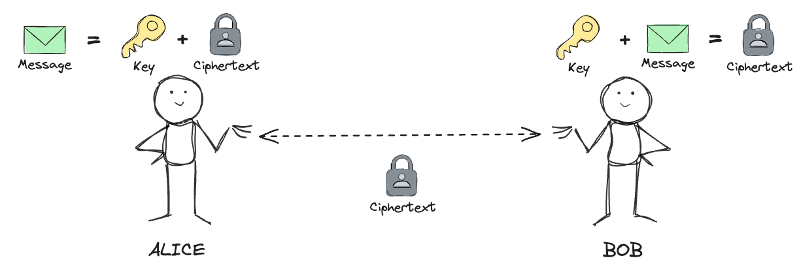

Agenda
Warm up
Symmetric encryption
The most popular symmetric algorithm is the Advanced Encryption Standard (AES)
AES with 256 bit key length is approved by NSA for top secret information.
Asymmetric encryption
- 🔒
Key exchange/establishment
→ establishing a secure communication channel
→ then hand over to symmetric encryption for efficiency
- ✍️
Digital signatures
→ create and verify signatures
→ serve as proof of digital content authenticity and integrity
Quantum threats
source: Stefano Markidis, KTH Royal Institute of Technology, https://arxiv.org/abs/2405.07222
...quantum parallelism allows quantum computers to evaluate a function $f(x)$ for many different values of x simultaneously.
One of most widely used public-private cryptosystems is RSA (Rivest–Shamir–Adleman)
Its security relies on the factoring problem of large prime numbers.
Example: factoring 15
- 1. Set $a = 13$
- 2. Find order $r = 4$
- 3. Calculate:
$p = gcd(170, 15) = 5$
$q = gcd(168, 15) = 3$
5 and 3 are factors of 15.
Shor's algorithm relies on inverse Quantum Fourier Transform used for function order finding. QFT is exponentially faster than any classical alternative.

Because of that it can be used to attack symmetric encryption schemes such as AES, however that can be easily countered by increasing the key size.
Brute force AES 256:
- ⚛️ quantum → $2^{128}$ steps
- 💻 classical → $2^{256}$ steps
Post quantum cryptography
In 2016 NIST (National Institute of Standards and Technology) announced a post-quantum cryptography competition, with the aim to provide a standardized crypto scheme resistant to quantum threats.
Source: Apple, https://security.apple.com/blog/imessage-pq3/
Demos